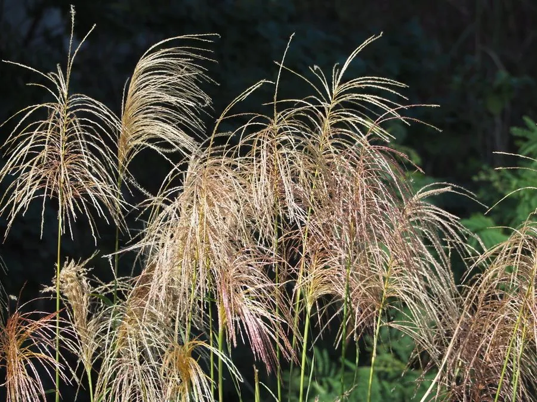

花卉与草本 · 植物界
芒草 Miscanthus sinensis

禾本科多年生高大草本，秋季抽出羽状花序，随风摇曳如波浪，是湿地与山坡常见的观赏草，原产东亚。
- 分类
- 门被子植物门纲木兰纲目禾本目科禾本科属芒属
- 栖息环境
- 东亚的山坡、林缘与湿地，喜光、耐寒、耐旱
- 地理分布
- 原产东亚，中国各地常见，日本、朝鲜半岛也有分布
- 保护级别
- 暂无评估
物种志
芒草为禾本科芒属多年生草本，株高 1–2 米，丛生，茎秆直立。叶片带状，长 50–100 厘米，边缘有细齿。圆锥花序大型，长 20–40 厘米，主轴明显，小穗有芒，初为紫红色，后转银白色，花期 8–10 月；果实为颖果。
芒草原产东亚，中国各地山坡、林缘和湿地常见，喜阳光充足、温暖和湿润的环境，耐寒耐旱，适应性强，常成片生长形成“芒草荡”。它秋季抽出羽状花序，随风摇曳如波浪，是园林中常见的观赏草，可用于花境、水岸和边坡绿化；茎秆可作造纸和编织材料，花序可作干花。栽培以分株繁殖为主。
形态与习性
- 株高1–2 米，丛生
- 花期8–10 月，花序长 20–40 厘米
- 果期秋季结颖果
- 光照喜充足阳光
- 水分耐旱也耐湿
- 土壤适应性广，多种土壤均可生长
- 繁殖以分株繁殖为主
- 主要用途观赏草、造纸编织、干花
趣味知识
- 芒草秋季抽出羽状花序，初为紫红、后转银白。
- 它适应性强，常成片生长形成“芒草荡”。
- 芒草茎秆可作造纸和编织材料，花序可作干花。
- 芒草与芦苇外形相似，但花序和叶片结构不同。